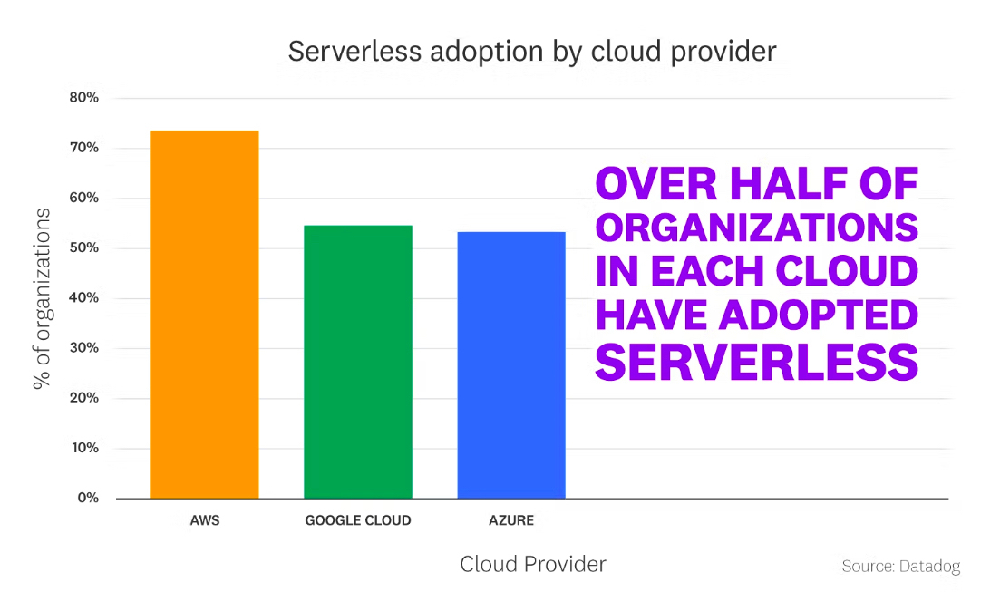
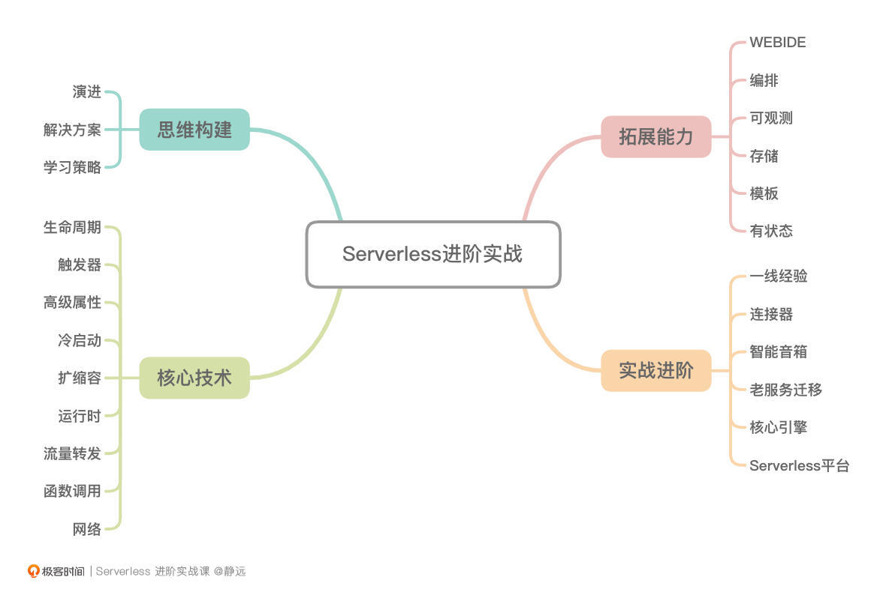

- 00 开篇词 Serverless是降本增效浪潮下的必然选择.md.html
- 00 思维构建 如何在新赛道下进阶Serverless能力？.md.html
- 01 生命周期：函数计算的基本流程是如何执行的？.md.html
- 02 触发器：如何构建事件源与函数计算的纽带？.md.html
- 03 高级属性：应对生产级别的应用，你需要掌握哪些技能？.md.html
- 04 冷启动：如何加快函数的第一次调用过程？.md.html
- 05 扩缩容：如何应对流量的波峰波谷？.md.html
- 06 流量转发：函数在不同情形下是如何执行的？.md.html
- 07 运行时（上）：不同语言形态下的函数在容器中是如何执行的？.md.html
- 08 运行时（下）：不同语言形态下的函数在容器中是如何执行的？.md.html
- 09 小试牛刀（一）：如何利用函数之间的调用解决业务问题？.md.html
- 10 小试牛刀（二）：如何突破VPC网络的速度限制？.md.html
- 11 WebIDE：如何让函数远离繁琐的本地开发模式？.md.html
- 12 编排：如何协调多任务的运行？.md.html
- 13 可观测（上）： 如何构建多维度视角下的Serverless监测体系？.md.html
- 14 可观测（下）： 如何构建多维度视角下的Serverless监测体系？.md.html
- 15 选型：不同阶段的数据应如何存储？.md.html
- 16 动手体验（一）：如何实现业务高效率地开发上线？.md.html
- 17 动手体验（二）：如何在云函数场景下实现一个有状态的服务？.md.html
- 18 实战指南：Serverless沙场老兵的一线使用经验.md.html
- 19 实战进阶（一）：Serverless “连接器” 的能力到底有多大？.md.html
- 20 实战进阶（二）：如何基于智能音箱开发一个BOT技能？.md.html
- 21 实战进阶（三）：传统的服务如何迁移到Serverless平台？.md.html
- 22 私有云：赛马时代的Serverless核心引擎谁能胜出？.md.html
- 23 实战进阶（四）：如何从0到1进阶一个开源引擎？.md.html
- 24 实战进阶（五）：如何从Serverless引擎蜕变成一个Serverless平台？.md.html
- 结束语 在实战中把握事物本质，不断革新.md.html
- 捐赠
00 开篇词 Serverless是降本增效浪潮下的必然选择
你好，我是静远。
先和你简单介绍一下自己。我现在是一家互联网公司的云原生资深技术专家，负责Serverless相关的业务和技术，主要为公有云和私有化的客户提供Serverless相关的落地解决方案，同时，我也是中国信通院在Serverless领域的标准专家。
伴随着云原生的日渐火热，Serverless作为云原生架构的核心组成部分，现在已然成为近年来技术圈内的当红炸子鸡。到底有多火呢？我们来看看下面的数据。
Datadog的数据显示，在使用云服务的机构和组织中，有半数以上采用了Serverless技术。信通院2021年的最新报告也显示：在核心业务中使用Serverless的用户占到18.11%，已经开始和计划使用Serverless技术的用户超过了70%。

目前，行业内云原生、Kubernetes、容器工程师供不应求。各一线大厂都在加急招聘云原生工程师，在这种情况下，让自己成为会Serverless、懂Serverless的工程师，能够助力我们弯道超车，向目前大热的云原生技术要红利。
让人“又爱又恨”的Serverless
Serverless的持续升温，得益于它在“快速的开发交付”“极高的运维效率”“极低的资源成本”这三个方面上的优势。
从容器、应用、函数等不同维度，Serverless可以让自己的业务更快上云，让我们享受云带来的便利性。把管理机器资源、网络资源这些繁琐的事情交给更专业的平台去处理，更加专注于业务和产品自身，进而更好地提升产品和业务的核心竞争力，让专业的人做专业的事。最后，也可以逃脱被产品挑战“这个功能这么简单，要这么长的时间才能开发完吗？”的质疑。
虽说Serverless有这么大的优势，经历过这几年的发展，关于Serverless的公众号、书籍和社区资料也不少，但真正落地使用的时候，不管是客户、团队的同学还是我，都还像是在摸着石头过河。
经历了N个令人头秃的夜晚后，我才发现，Serverless不断延伸发展的特性，极大地提升了我们学习和使用的难度。
所以接下来，我们就一块来看看，怎么从Serverless不断发展的“变”中去把握“不变”，在Serverless领域快速的成长进阶。
课程设计
我把整个课程设计为了“核心技术”“拓展能力”“实战进阶”三大模块，希望通过循序渐进的方式让你一步一步成为Serverless领域的专家。
导读
在课程开始，我会详细的介绍Serverless的前世今生，在学习之前把我和团队同学总结的成长路径分享给你。同时，我会结合中国信通院最新的标准，把Serverless的完整解决方案平铺在你面前。最后，我会讲解一下在Serverless道路上的学习方法，让你升级打怪的道路更加平坦，最终成为王者。
核心技术
这一模块，我会通过具象的FaaS产品和技术，将抽象的Serverless的核心要点梳理清楚，包括触发器、冷启动、扩缩容、流量转发、运行时等核心技术的实现机制。同时，我也会在原理中穿插案例和一线经验，让你能够即学即用，拨开云雾见青天。
有了核心技术的储备，就好像一棵大树有了“主干”。当你明白了Serverless的架构原理、核心特性以及技术细节之后，对设计一个同样Serverless形态的云计算产品就能做到心中有谱了。
拓展能力
这一模块我会讲解Serverless的延伸能力，让你了解Serverless的整体解决方案。它包括如何将WebIDE的能力在FaaS中具体实施起来、如何构建多任务的编排能力、如何构建多维度的Serverless可观测体系等6个小节。
这一模块的内容，相当于Serverless这棵大树的枝叶。如果之后让你主导一个新的Serverless形态的云原生产品的技术架构设计工作，你应该也能触类旁通，游刃有余了。我想，你离架构师的目标就进了一步。
实战进阶
通过前面几个模块的学习以及贯穿在课程中的实操，一般的场景实战和一线问题应该难不倒你了。
但纸上得来终觉浅，在实战进阶中，我会和你分享我作为业务方和平台方两种角色下的亲身经历，跟你聊聊一线的经验，也会通过几个典型的案例，帮你把前面学到的知识点用“活”起来。
另外，Serverless的发展离不开开源生态和社区的贡献。在这里，我还会跟你一起探讨开源引擎的那些事，并且结合我和客户、用户打交道总结下来的经验，分享一下落地思考的过程，并以如何基于核心引擎构建属于自己的Serverless平台作为这个模块的结束，也是整个专栏的升华。
通过这样“三位一体”的学习路径，我更希望你能领会到Serverless的“意”，而不是“形”，因为随着Serverless的发展越来越热，云上的产品也会越来越丰富。
如果你是Serverless平台的使用者，通过专栏的学习，一定会在应用上更加得心应手，知其然，也知其所以然。如果你是Serverless平台的开发者，通过专栏的学习，在云原生产品的开发和创新上，你的思路也一定会越来越开阔。

在你踏上Serverless的学习进阶之路之前，我再送你一张课程的知识地图，希望在接下来的学习中，它能作为你提前预习和课后复习的知识脉络，帮助你将以FaaS为起点的Serverless的技术融会贯通。
写在最后
这门课我最终选择了以FaaS形态的Serverless为切入点，来跟你剖析这里面的核心技术、拓展能力和实战经验。
为什么会这么选择呢？给你分享一下我的想法，当然，也欢迎你在留言区和我一块讨论。
Serverless现在还在快速成长的阶段，功能、产品、面向的领域也在延伸。想要在这个快速迭代、动态发展的技术领域里构建自己的知识体系实在是难上加难。况且，Serverless发展到今天，已经不是一两个明确的技术或者产品了，它包含着一整套的产品体系和技术理念。
我们可以从两个层面来看待。一个层面是理论学术层面，包括FaaS（Function as a Service）和BaaS（Backend as a Service），其中BaaS有Serverless化的消息中间件、对象存储、数据库等。另一个层面是产品技术层面，包括函数计算FaaS、弹性应用托管服务、弹性的容器服务等产品，以及一整套配套的工具链。
试想一下，难道我们要每拓展一个产品、功能或者领域，就要从0开始学习吗？
那么，我们是不是能找到一个较为成熟的切入点，在了解技术本身的同时，掌握学习它的方法呢？
FaaS作为Serverless意识形态的“元老”级别产品，从AWS Lambda发布，再到众多厂商开始紧跟潮流，发展到目前已经有8个多年头了。自定义运行时、自定义镜像、编排、应用中心等也都是基于FaaS打造和延伸的功能。因此，我觉得FaaS形态的Serverless是非常好的入手选择。
希望这样的聚焦方式，能够帮你养成举一反三的习惯和能力。这几年和Serverless打交道的一线经验、解决的问题，以及平台设计上抽象出来的方法让我获益良多，我希望这些经验也能够以案例和实战相结合的方式交到你手上，让我们一起推进Serverless向前迈进。
在伯克利大学发表的新论文中，预言了 Serverless 将主导云计算下一个十年的发展。我坚信，通过这样的方式，你一定可以成为Serverless的一员干将，在未来的十年里站得更稳。
接下来，让我们一起开启Serverless的学习之旅吧！
© 2019 - 2023 Liangliang Lee. Powered by gin and hexo-theme-book.